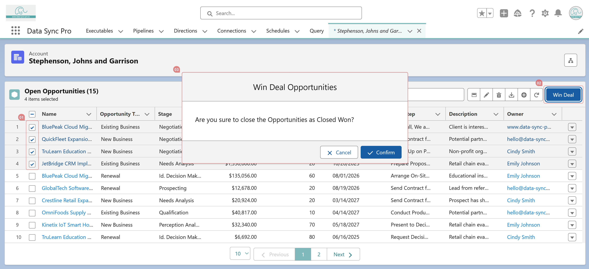

Yes. In the Executable settings, you can enable a confirmation prompt:
Confirm Before Action? – Displays a confirmation dialog when the user clicks the action button.
Action Confirm Message – Customizes the message shown in the dialog.
This ensures users review their choice before the action is executed.
